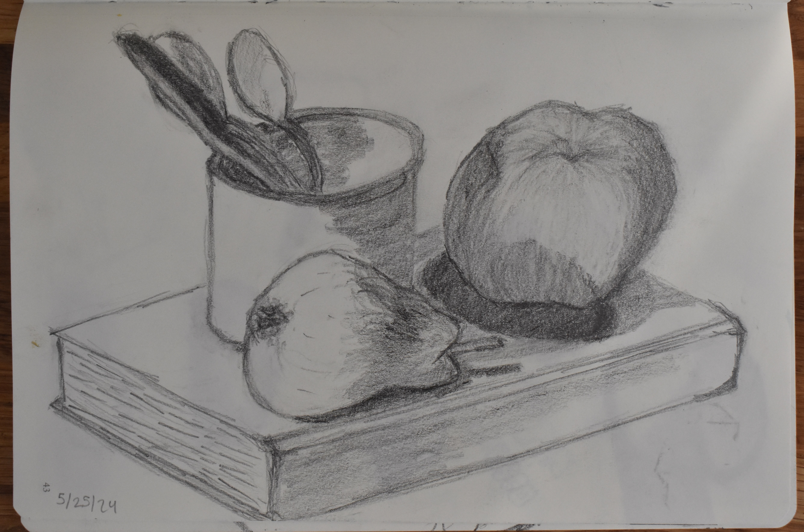
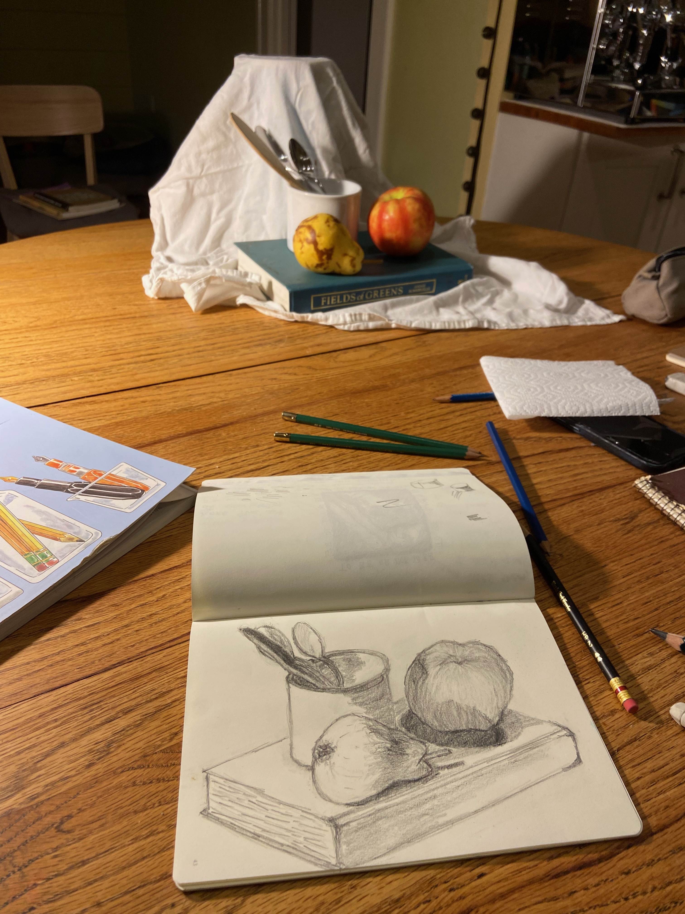

Still life sketch with pencil from the summer before my sophomore year of college. I did this alongside my mom and sister, which was particularly fun because my mom has always loved drawing but rarely finds the time to do it. This was towards the beginning of my sketching and experience with giving depth to form while still capturing the true light in the scene.

